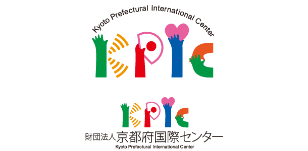

This is an online system where students can improve their Japanese level at home with a
combination of one-to-one online conversation classes and self-study using our original content.
Use your in-between time effectively, selecting study courses from various modes such as Story Mode and Self-study Mode.
You can learn more about kokoka online nihongo click on here KOKOKA
Japanese Pod 101
Free and paid Japanese lecture provided
Created by Peter Galante in 2005, JapanesePod101.com provides audio and video
lessons with accompanying text expansion exercises and other extensive tutoring
aids available to paid subscribers or "premium subscribers". It is a product of
Innovative Language Learning and is produced in Tokyo, Japan.
You can learn more about Japanese Pod 101 click on here JapanesePod101

KPIC web site
collection of information related to learn Japanese from Kyoto Prefectural International Center (KPIC)
Kyoto Prefectural International Center promotes internationalization with the cooperation of many enterprises,
educational institutions, private organizations and ordinary people.
You can learn more about Kyoto Prefectural International Center click on here KPIC
Careercross
Youtube channels recommendation from Careercross
You can learn more about Careercross website recommended YouTube channels click on here Careercross